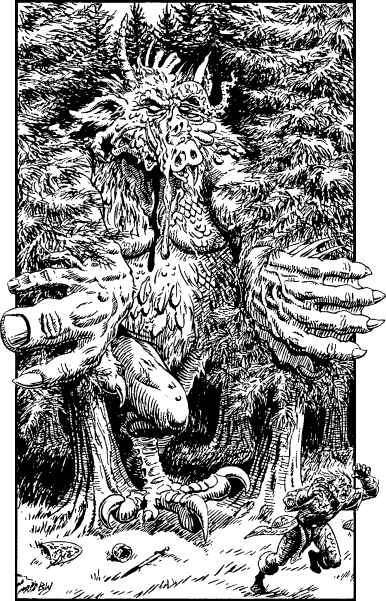

40
Something huge and deadly is striding towards Tolakos. The ground trembles beneath its step and the air is filled with sounds of great destruction. The crack and groan of sundered trees and the thunderous growls of a gigantic beast grow steadily louder, driving many of Lorkon’s soldiers to the brink of despair. Desperately he tries to rally them but his voice is lost in the deafening noise.
Suddenly a gap appears at the forest’s edge as, effortlessly, a pair of stout trees are pushed apart by monstrous hands. Morbid terror grips the Meledorians and few stand their ground when they see the awesome visage of the Chaos-master looming thirty feet above. You look upon his massive, naked body and feel sickened by what you see. His features are in a constant state of flux, dissolving, merging, and melting into new and ever more hideous shapes. Only Lorkon appears unmoved by the dreadful sight; he raises his sword and challenges the evil being to single combat, but his brave words are met with a howl of derision.

‘You would challenge a god?’ speaks the Chaos-master, his mocking voice unbearably loud. Lorkon remains undaunted by his enemy and repeats his call to combat. The Chaos-master laughs. ‘Ha! Then let us begin, for though our sport shall be but a brief affair, I will delight in killing such a righteous fool as thou, Lorkon.’
With terrifying ease the Chaos-master uproots a tree, pares away the branches with the edge of his hand, and then wields it like a gigantic club. He strides forward, pursuing Lorkon in a grim game of cat and mouse that leaves a trail of destruction wherever they go. The Meledorian relies on luck and fleetness of foot to avoid the crushing blows, but his luck and skill do not last indefinitely. He slips and falls near the wall of the crypt on the roof of which you are crouching. The Chaos-master bellows with glee and strides forward, his club raised to crush Lorkon to an unrecognizable pulp. His loathsome shoulders draw level with the parapet and, as he steadies himself for the coup de grâce, he comes within an arm’s length of your position.
If you possess the Sommerswerd, turn to 341.
If you possess the Ironheart Broadsword, turn to 204.
If you do not possess either of these Special Items, turn to 111.